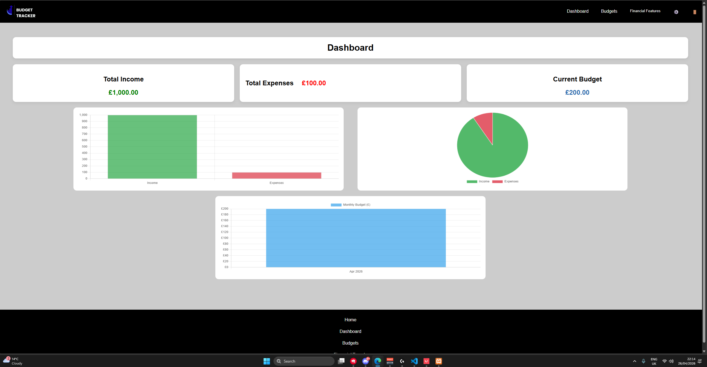
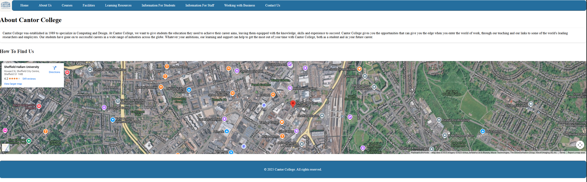
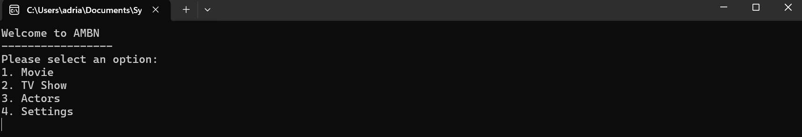
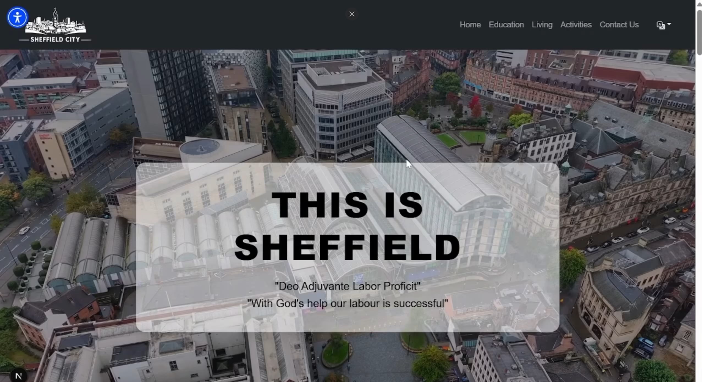

Hi, I'm Mario.
I build websites and software, from the pages people see to the code running behind them. Below is what I work with and how I've used each skill in my projects.
I build websites and software, from the pages people see to the code running behind them. Below is what I work with and how I've used each skill in my projects.

I use PHP for the server side of a website: handling forms, talking to a database and deciding what each visitor sees.

Python is my go-to for scripts, automation and anything where I want to solve a problem quickly.

I use C# for structured, object-oriented applications, mainly desktop programs and console tools.

HTML is the foundation of every page I build. I focus on clean, meaningful structure so pages are easy to read, style and navigate.

CSS is where I make a site look good on every screen size. I enjoy layout, colour and small animations.
JavaScript makes pages interactive. I use it to respond to clicks, load content and update the page without reloading.
fetch and flips the project cards on click.Node.js lets me use JavaScript on the server, so I can build back ends and tools in the same language as the front end.
Bootstrap helps me build clean, responsive layouts fast, especially when a project needs to look good on phones and desktops from day one.